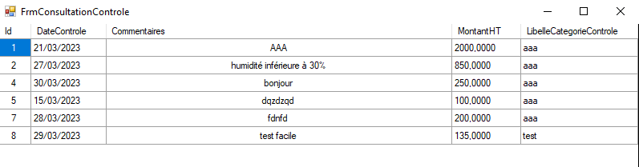

GsbZonesStockage
Compétence
Réaliser une application respectant une architecture en plusieurs couches
Travailler en mode projet
Participer à l’évolution d’un site Web exploitant les données de l’organisation
Réaliser les tests d’intégration et d’acceptation d’un service
Situation professionnelle
Actuellement il n’existe aucun suivi des contrôles réalisés dans les zones de stockage de GSB.
Vous êtes chargés de développer une application permettant d’enregistrer les caractéristiques des
zones de stockage et des entreprises habilitées à les contrôler. La gestion des contrôles réalisés doit
également être prise en charge par l’application.
Productions attendues
Modèle Entité-Association
Diagramme de cas d'utilisation
Base de données SQL Server
Application opérationnelle
Déroulement du projet
Ce projet à était réaliser en équipe.
La composition de l'architecure de l'application s'est faite en 4 parties : GUI,DAL,BLL,BO.
Le C# a été mon langage utilisé.
Les médicaments sont constitués d’une substance présentant une action thérapeutique appelée le
principe actif (espèces chimiques d’origine naturelle extraites de plantes ou d’animaux ou espèces
chimiques synthétisées en laboratoire) et d’autres substances, appelées excipients, destinées à
faciliter la mise en forme du médicament, lui conférer un goût particulier, diminuer certains effets
indésirables, faciliter la stabilité, favoriser la dissolution ….
La règlementation française impose à toute entreprise manipulant et fabriquant des produits
chimiques, des contrôles réguliers sur la sécurité des zones de stockage des produits utilisés et
fabriqués.
GSB est soumise à cette réglementation puisqu’elle a besoin de stocker des produits chimiques qui
entrent dans la fabrication des médicaments et les médicaments eux-mêmes, considérés comme des
produits chimiques.
Les contrôles effectués sur les zones de stockage permettent d’assurer :
• la bonne conservation des substances et des médicaments (l’humidité de l’air est par
exemple un des facteurs de dégradation des principes actifs des médicaments, par ailleurs
beaucoup de principes actifs sont photosensibles et ne doivent pas être exposés directement
à la lumière du jour)
• la sécurité du personnel et des marchandises stockées
• la protection de l’environnement contre des accidents (explosion, incendie, infiltration de
produits dangereux dans le sol…)
L’entreprise GSB dispose de plusieurs zones de stockage pour entreposer les médicaments qu’elle
fabrique et les substances utilisées pour les fabriquer (poudre, gaz …). Elle demande à des
entreprises spécialisées de réaliser régulièrement différents contrôles au sein de ses zones de
stockage.
L'architecture de l'application GsbZoneStockages :
Le MCD de l'application GsbZoneStockages :
Le diagramme de l'application GsbZoneStockages :
Les tables de la base de données SQL :
Les données de la table controle :
Le tableau trello :
Quelques images supplémentaires de l'application DotNet :
